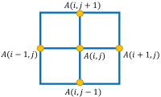
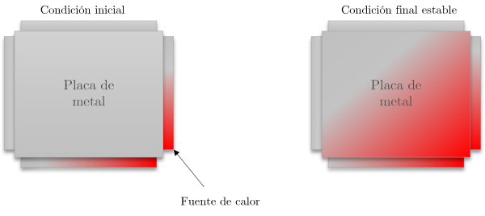

La ecuación de Laplace es una ecuación parcial de segundo orden que es usada en muchos problemas en física, incluídos electroestática, flujo de fluídos, temperatura, etc.
En su forma más básica puede ser expresada como:
$$\nabla^2f(x,y)=0 $$
En particular, para resolver problemas de simulación y propagación de temperatura se ha propuesto la iteración de Jacobi. Esta iteración establece que la ecuación de Laplace aplicada en una matriz de puntos, un punto de esta matriz es el promedio de sus vecinos. En consecuencia, se puede converger a un estado mediante el cómputo iterativo de nuevos valores para cada punto de la matriz usando el promedio de los puntos vecinos. La siguiente imagen muestra el cálculo del promedio de vecinos realizado en cada iteración de Jacobi:

$$A_{k+1}(i,j)=\frac{A_k(i-1,j)+A_k(i+1,j)+A_k(i,j-1)+A_k(i,j+1)}{4} $$
De esta forma, para calcular el valor \(A(i, j)\) de la iteración \(k+1\), se calcula el promedio del valor de sus vecinos obtenido en la iteracion \(k\).
En este proyecto, usted debe implementar un simulador de propagación de calor en metales. Suponga que existe un metal de ciertas dimensiones al cual se le aplica una fuente de calor en su extremo. Al pasar el tiempo, el calor comienza a propagarse a través del metal hasta alcanzar un estado de estabilización (estado final estable). Este comportamiento puede ser modelado mediante iteraciones de Jacobi y la ecuación de Laplace descritas anteriormente. La siguiente figura muestra un ejemplo gráfico del estado inicial de una placa de metal y el estado final de estabilización con la programación de calor.

La placa de metal la podemos modelar computacionalmente mediante una matriz de valores que indiquen la temperatura de cada uno de sus puntos. Sin embargo, el cálculo para realizar la simulación de propagación de calor tomará mucho tiempo de forma secuencial, ya que se deben realizar cientos de iteraciones con el cálculo del promedio de vecinos. Es por esto que se requiere que usted implemente una versión paralela utilizando DPC++.
El cálculo principal a implementar para generar la simulación está dado por el siguiente código secuencial:
// Iterar hasta alcanzar un estado de estabilización o número máximo de iteraciones
while ( dt > MAX_TEMP_ERROR && iteration <= max_iterations ) {
// Cálculo principal:
// Por cada posición de la matriz calcular el promedio de los vecinos
for(i = 1; i <= ROWS; i++) {
for(j = 1; j <= COLUMNS; j++) {
Temperature[i][j] = 0.25 * (Temperature_last[i+1][j] + Temperature_last[i-1][j] +
Temperature_last[i][j+1] + Temperature_last[i][j-1]);
}
}
dt = 0.0; // resetear cambio de temperatura más grande
// Copiar matriz y encontrar el máximo cambio de calor
for(i = 1; i <= ROWS; i++){
for(j = 1; j <= COLUMNS; j++){
dt = fmax( fabs(Temperature[i][j]-Temperature_last[i][j]), dt);
Temperature_last[i][j] = Temperature[i][j];
}
}
}
El ciclo while controla el término de la iteración de Jacobi, se continuará con iteraciones mientras no se alcance un nivel de estabilidad de calor (dt > MAX_TEMP_ERROR) y el número máximo de iteraciones no se alcance (iteration <= max_iterations). Las estructuras for internas corresponden a cálculos que deben ser paralelizados. El primer for anidado calcula el promedio de vecinos para cada posición de la matriz, y el segundo for anidado copia los nuevos valores calculados entre matrices y encontra el máximo cambio de calor entre la iteración anterior y actual. Notar que al momento de paralelizar la búsqueda del máximo cambio de calor en el segundo for anidado todos los hilos deben actualizar la variable dt, por lo que es necesario utilizar alguna técnica de reducción y/o sincronización.
En su implementación debe utilizar técnicas disponibles en DPC++ para acelerar este procesamiento en Multi-core CPU, GPU o FPGA. Para esto debe considerar los siguientes aspectos:
- Declaración de buffers para el almacenamiento de datos
- Paralelizar el procesamiento mediante el uso de parallel_for, range y nd_range
- Sincronización en la actualización de datos compartidos por múltiples hilos
Implementación y Entrega
- El proyecto puede ser realizado en equipos de a lo más 2 integrantes
- La entrega se realiza mediante Github Classroom.
- El código inicial incluye una versión secuencial del problema. Usted debe implementar su solución en la función laplace_parallel usando DPC++.
- Su implementación debe cumplir dos objetivos:
- El cálculo de la simulación de temperaturas debe ser correcto
- Su implementación debe ser más eficiente en rendimiento que la implementación secuencial. Actualmente el rendimiento es medido contabilizando el tiempo en resolver la simulación
- Al evaluar las entregas, se realizará un ranking con las implementaciones más eficientes. Esto será considerado en la calificación final.
- Entregas:
- Primera entrega:
- Implementación en DPC++ de la simulación funcionando correctamente.
- Martes 30 de Noviembre, 11:59 PM.
- Entrega final:
- Implementación en DPC++ de la simulación funcionando correctamente con mejoras en rendimiento.
- Jueves 23 de Diciembre, 11:59 PM.
Referencia: Problema adaptado desde material académico por John Urbanic.